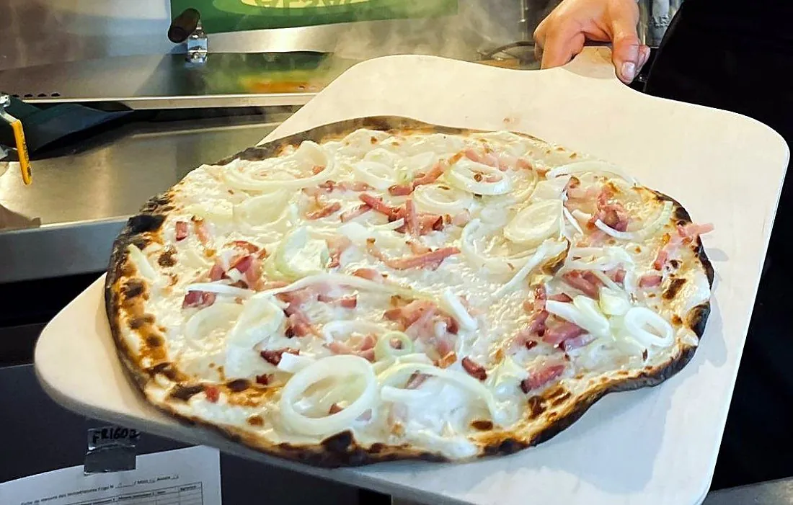
La tradition
Crème, oignons, lardons : la recette telle qu'on la partage en Alsace.
Tarte flambée alsacienne · Gruyère, Fribourg
Un Citroën HY de 1973, un four professionnel et la recette alsacienne de la tarte flambée, réunis pour venir jusqu'à vous.
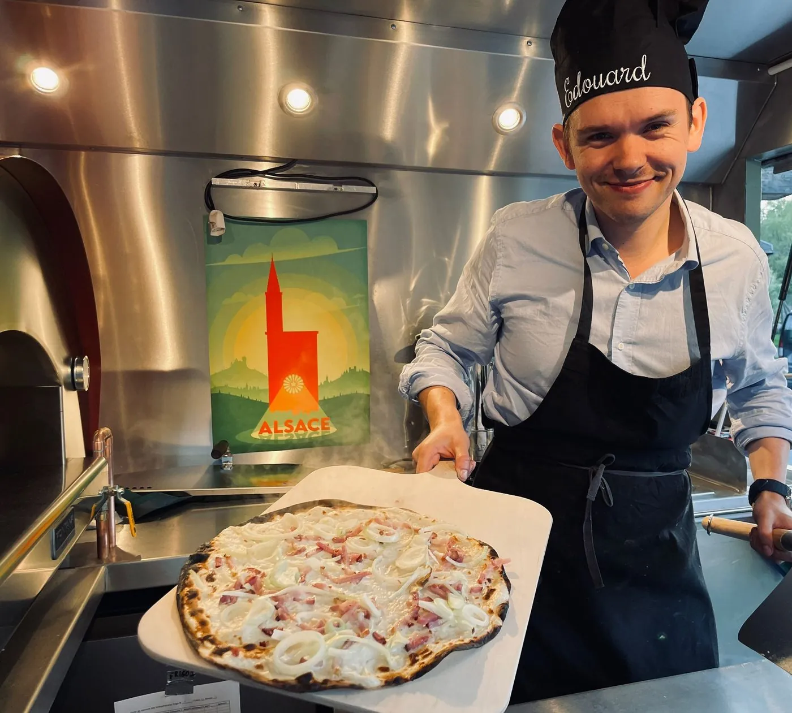
Le fourgon, cher à Louis la Brocante, abrite une cuisine complète. Chaque tarte y est préparée et cuite devant vous.
Une pâte fine cuite au gaz ou au bois dans un four professionnel. Croustillante sur les bords, généreuse au centre.
Des bases alsaciennes de qualité, des légumes, viandes et Gruyère issus de l'agriculture suisse selon la saison.
L'histoire
La flamm' d'Edouard est née de l'envie d'associer mes racines alsaciennes, ma passion de la mécanique et de l'esthétique ancienne à ma volonté d'entreprendre.Edouard, fondateur
Sa mission : faire découvrir en Suisse la véritable tarte flambée, telle qu'on la partage en Alsace. Au comptoir, Edouard vous accueille seul ou avec une équipe efficace. Avec une envie toute simple : vous faire plaisir.
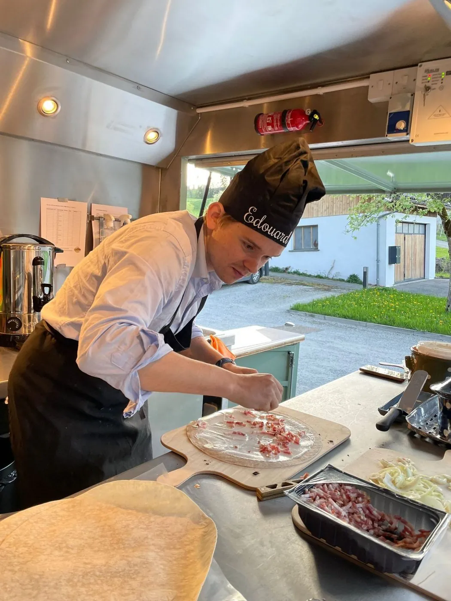
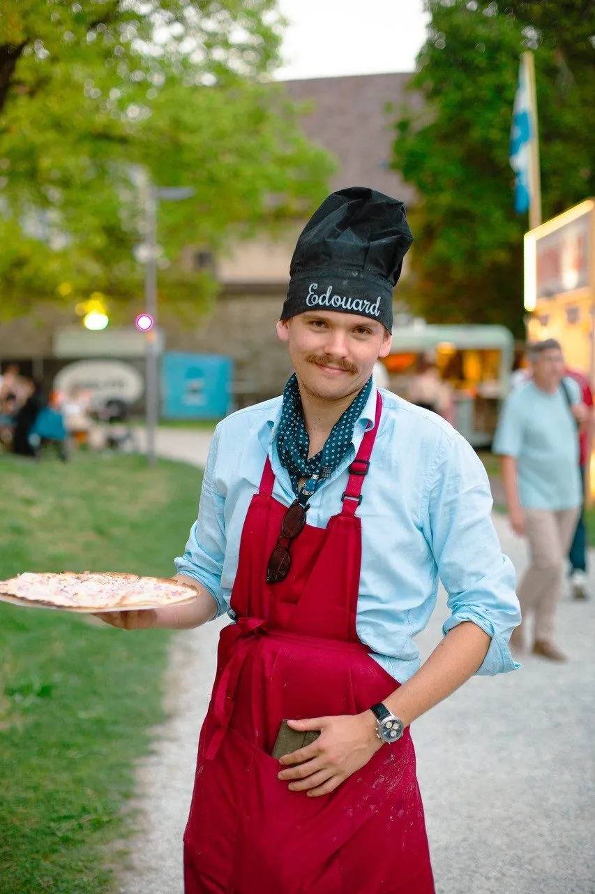
Au centre de l'offre
Pâte fine cuite à la flamme dans notre four professionnel à 400 degrés, garnie selon les recettes traditionnelles ou nos créations du moment. L'essence de l'Alsace dans chaque part.

Crème, oignons, lardons : la recette telle qu'on la partage en Alsace.
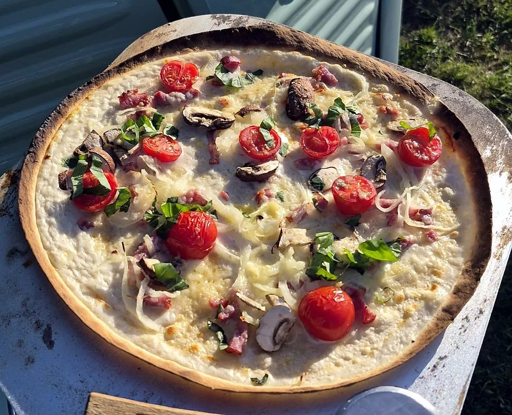
Des garnitures qui suivent les arrivages et la saison.
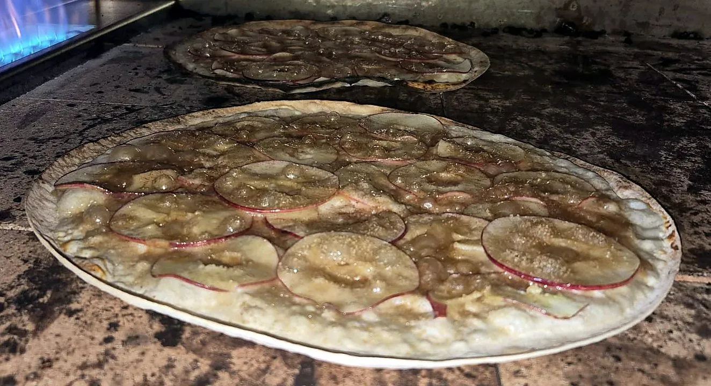
Fines tranches de pomme, cuite à la flamme.
TFT Spécialités, membre de la Confrérie du Véritable Flammekueche d'Alsace, pour des bases de qualité alsacienne.
Agriculture suisse pour les légumes, les viandes et le Gruyère, selon la saison et les disponibilités.
Allergènes : gluten, lactose. Télécharger la carte des mets (PDF)
Sur la route
Chaque semaine, le fourgon s'installe aux mêmes endroits, aux mêmes horaires.
Magasin de sport Dupasquier, Rte Principale 144
Mardis (1re et 3e semaines) et vendredis (2e et 4e semaines), 17h30 – 20h30
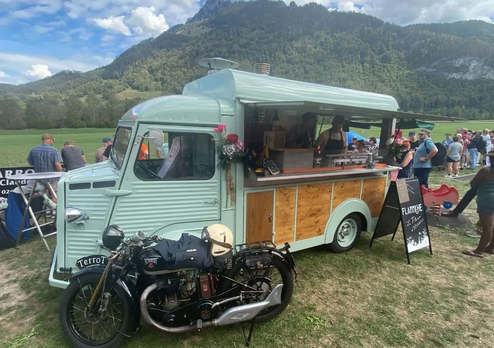
Pour vos événements
De l'intimité d'un anniversaire à l'effervescence d'un festival, la prestation s'adapte à votre lieu, vos horaires et vos envies.
En images
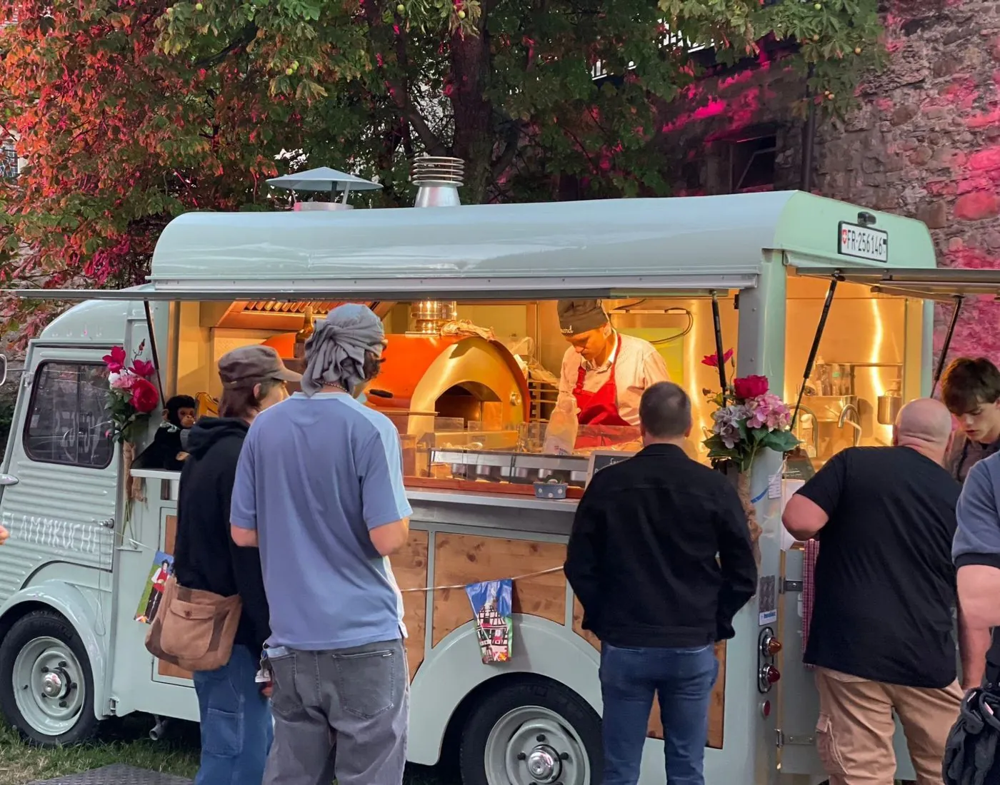
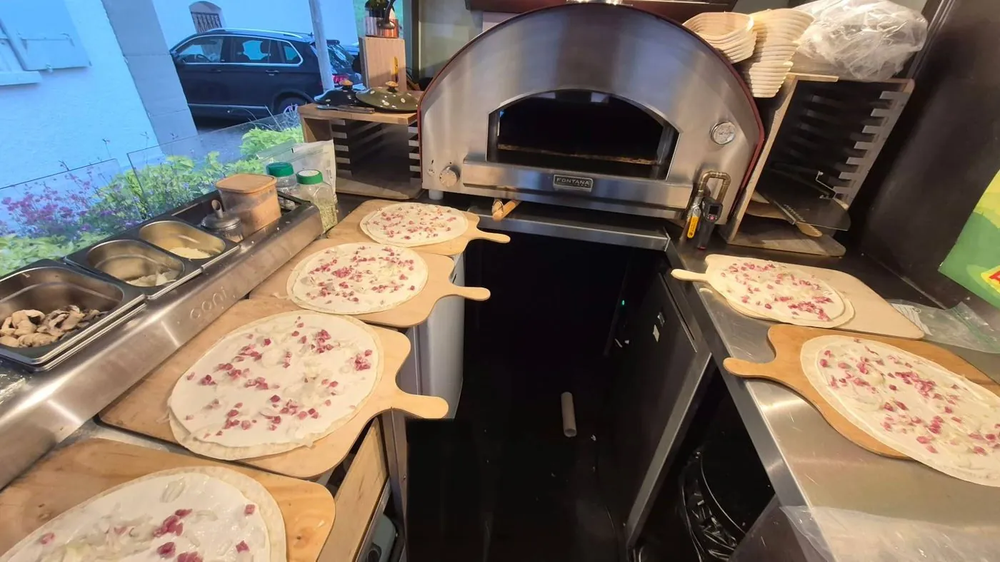
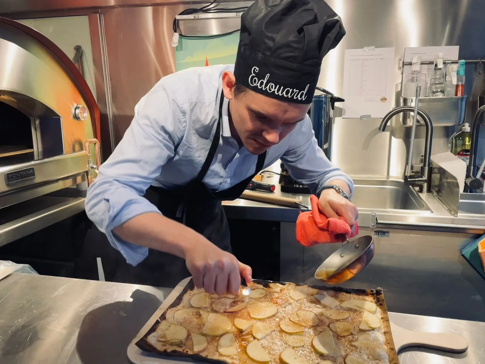
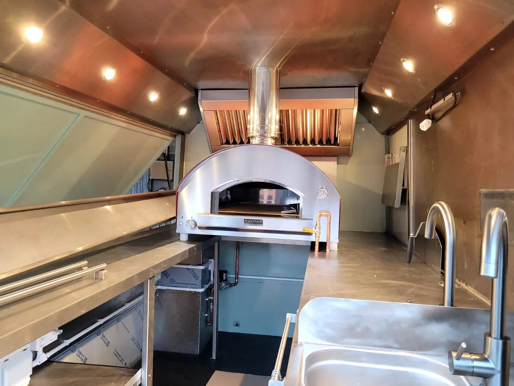
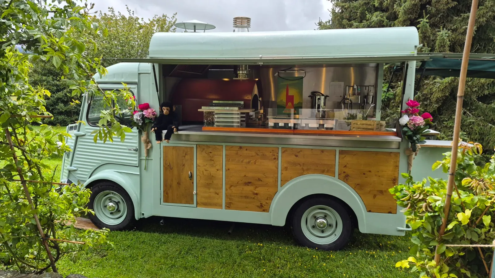
Contact
Écrivez ou appelez Edouard : il vous propose une prestation à la mesure de votre événement.